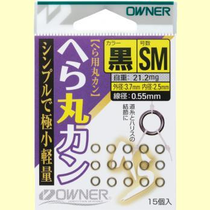
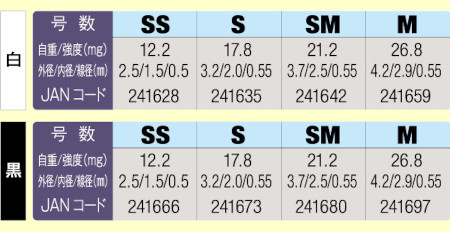
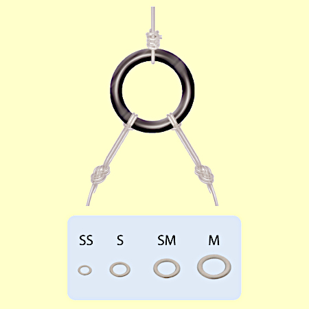
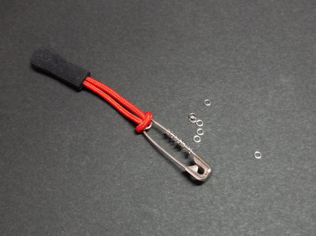

私のお気に入り
OWNER(オーナー) ヘラ丸カン B-SS （ティペットリングの代用品）
YouTube の釣り動画を見て、まんまとユーロニンフィングのロッド、ライン、サイター、洋書、DVD などを買ってしまった。早い話が「ギョーカイ」の方々に釣られてしまったのだ。
調べているうちに、ティペットリングなるものが必要なことを知った。ティペットリングと言えば難しく聞こえて何やらスゴそうな代物だが、要は単純な金属の円環、スプリットリングの重なりが無いようなものである。
そこで、国内フライフィッシングブランド R・P社のティペットリングを買った。ところが、その製品は、ティペットを結んで引っ張ると、結び目からすべて切れてしまう！ という粗悪品であった。結び方を変えても同様だったので、こちらのミスではなかったと思う。
なかば呆れながら近所の釣具店に行き、年配の店員さんに同等の品が無いか訊いてみた。で、教えてくれたのがこの製品である。

オーナー社製 へら丸カン
画像はすべてオーナー社ウェブサイトより引用
画像はすべてオーナー社ウェブサイトより引用
良い点
- 安価である。黒色・SS サイズ 15個入り：275円
（2021/07/15時点：Amazon 税込み価格）
国内有名ブランド T社のティペットリング（アメリカ、サイエンティフィック・アングラーズ社製） 10個入り：1,760円のアマゾンレビューには、値段が高いと書き込まれていた。（笑） フライフィッシング関連のブランドだけで買い物をしていては、恐ろしい出費となってしまうなぁ。
もっともT社からは、別のティペットリングとして、10個入り：440円 という製品も販売されている。 - 高品質。信頼のオーナー社製。ウェブサイトのスペック一覧表（下記参照）には、各サイズ毎の強度が書かれていないが、日本の渓流で30～40cm サイズの魚を釣っていて、このリングが破断することは、まず無いであろう。気になる方は、メーカーに問い合わせてみて下さい。
- 色・サイズを選べる。黒と白色、サイズは SS, S, SM, M がある。


使うときのコツ
- 気をつけてパッケージから手のひらの上に出して、安全ピンに通して紛失を防ぐ。釣行前に自宅の机でやっておかないと、現場でやったら紛失必至！
固い机や紙の上にリングを出すと、安全ピンにうまく通せません。手のひらの弾力性が、この作業をやり易くしてくれる。 - さらに、百円ショップで売っているジッパータブを、安全ピンに付けておく。タブは派手な色のほうが、川原に落としたときに目立って良い。

- 安全ピンに刺したままの状態で、ティペット・ハリスをリングに結ぶ。安全ピンの軸を一緒に結ばないように！
ちなみに、ティペットリングを用いた仕掛け、釣り方で魚をキャッチしたことは、まだない。（泣）
今度、本流の 60cm オーバーのニゴイが釣れたら報告いたします。
2021/07/14
私のお気に入り 目次へ
サイトマップ
ホームへ
お問い合わせ